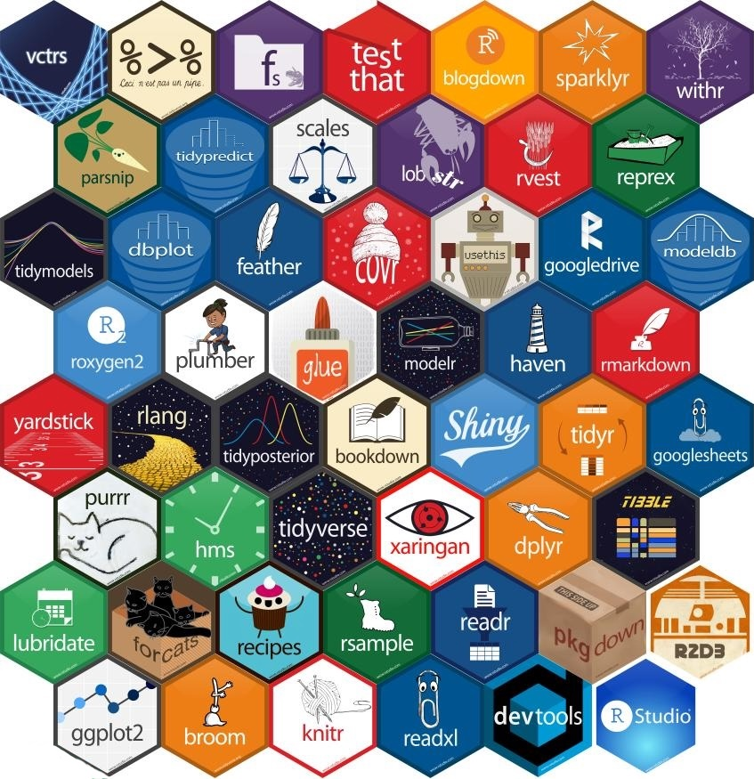
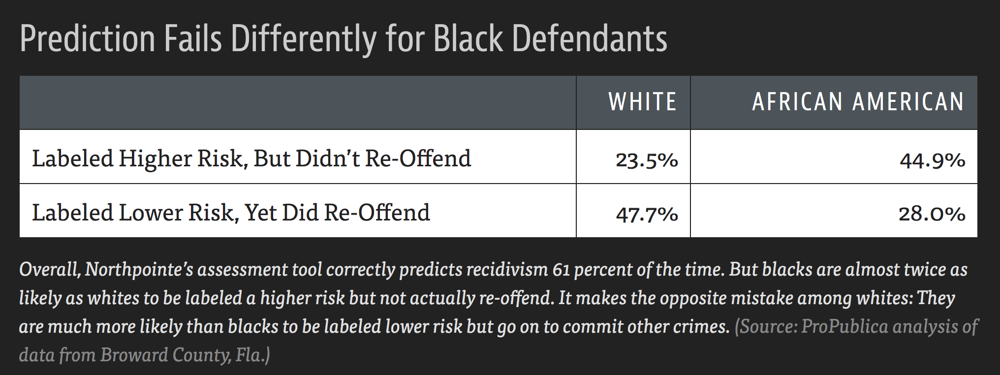

Data Ethics and LLMs
Grayson White
Stat 241
Week 11 | Fall 2026
The Americian Statistical Association’s “Ethical Guidelines for Statistical Practice”
“The ethical statistical practitioner seeks to understand and mitigate known or suspected limitations, defects, or biases in the data or methods and communicates potential impacts on the interpretation, conclusions, recommendations, decisions, or other results of statistical practices.”
“For models and algorithms designed to inform or implement decisions repeatedly, develops and/or implements plans to validate assumptions and assess performance over time, as needed. Considers criteria and mitigation plans for model or algorithm failure and retirement.”
Algorithmic bias: when the model systematically creates unfair outcomes, such as privileging one group over another.
Example: The Coded Gaze
Facial recognition software struggles to see faces of color.
Algorithms built on a non-diverse, biased dataset.
Algorithmic bias: when the model systematically creates unfair outcomes, such as privileging one group over another.
Example: COMPAS model used throughout the country to predict recidivism

Ethical considerations:
Algorithmic bias
Fair use / copyright considerations
Helpful context: our readings for today
better predictions –>
–>
–>
–>
–> –>
–>
–> –> –> –>
–>
–>
–>
(approximately up to) 24 billion parameter model –>